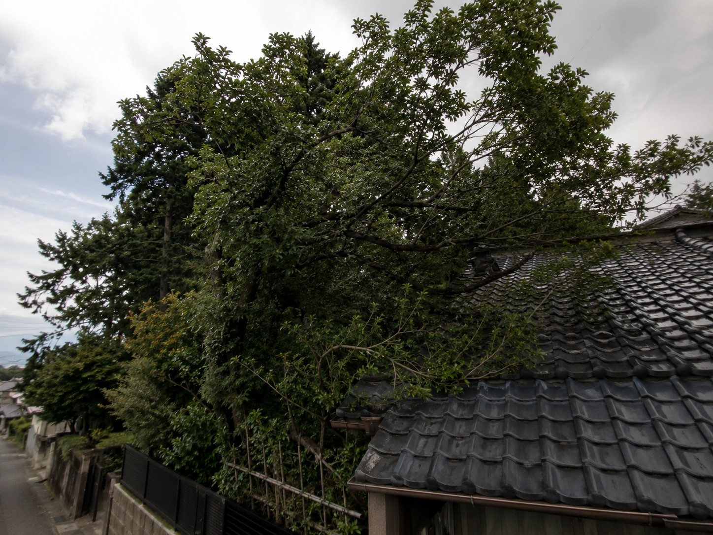
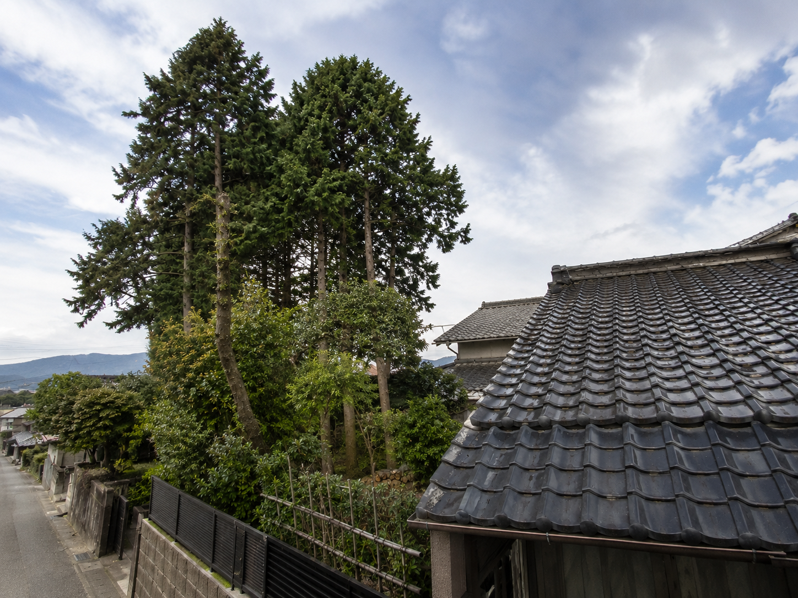

屋根より高くなり、強風で枝が揺れる
落枝や屋根への接触が気になる場合は、木全体と屋根まわりの写真をお送りください。
奈良市中心・奈良県内対応
屋根より高くなった木、隣家や電線に近い木、道路側へ枝が伸びた木は、早めの確認が必要です。写真を送るだけで概算見積をお伝えします。
屋根や隣家に近い高木は、無理に切らずにご相談ください。写真だけでも確認できます。
Risk Check
強い言葉で不安を煽るためではなく、作業条件が難しくなる前に状況を整理するための確認項目です。
落枝や屋根への接触が気になる場合は、木全体と屋根まわりの写真をお送りください。
越境枝や道路側への張り出しは、近隣への配慮を含めた確認が必要です。
電線との距離が近い場合は、無理に触らず、写真で位置関係を確認します。
狭小地や住宅密集地では、ロープワークや分割作業の検討が必要です。
Tall Tree Removal
高木は見た目以上に作業条件が変わります。家屋、カーポート、塀、電線、隣家との距離が近い場合、ただ根元から切るのではなく、上部から少しずつ枝や幹を下ろす確認が必要です。
竜樹伐採では、奈良市を中心に住宅地の高木伐採を相談できます。木の全体、根元、周辺の建物、搬出経路が分かる写真をお送りいただければ、まず概算の目安をお伝えします。
トップページへ戻るEasy Consultation
高木伐採は現場条件が分かるだけで、必要な確認事項がかなり整理できます。
木全体、根元、屋根や隣家との距離を送るだけで、概算の判断材料になります。
写真で判断しきれない高さや足場条件がある場合だけ、現地確認をご案内します。
伐採後の枝葉や幹の搬出、処分量の確認まで合わせて相談できます。
Situation
高木伐採では、木そのものの高さだけでなく、倒せる場所や搬出経路の確認が重要です。
枝が屋根に触れそうな木や、台風時の落枝が不安な木を確認します。
越境枝、落葉、日当たりなど近隣トラブルになりやすい木を相談できます。
住宅地や狭い庭など、搬出や足場に制約がある現場も写真で確認します。
Before / After
写真を送っていただくことで、どの枝から確認すべきか、どこに配慮すべきかを整理しやすくなります。

高さ、隣家との距離、落とせる場所が分からない状態では、無理な作業は危険です。

必要な確認を済ませてから、周辺に配慮しながら伐採・片付けを行います。
Flow
写真相談から作業完了まで、必要な確認だけを順番に進めます。
 写真を送る木全体と周辺を送る
写真を送る木全体と周辺を送る高さ、根元、屋根・電線・隣家との距離が分かる写真を送ってください。
 概算見積作業条件を整理
概算見積作業条件を整理写真と相談内容をもとに、料金目安と確認事項をお伝えします。
 必要に応じて現地確認安全面を確認
必要に応じて現地確認安全面を確認写真だけでは判断しにくい場合のみ、足場や搬出経路を確認します。
 正式見積作業範囲を明確化
正式見積作業範囲を明確化作業内容、搬出、処分量を確認したうえで正式な金額をご案内します。
 作業日調整近隣に配慮して日程決定
作業日調整近隣に配慮して日程決定車両や音、搬出経路を考慮しながら作業日を調整します。
屋根や隣家に配慮し、必要に応じて枝や幹を少しずつ下ろします。
 片付け・搬出枝葉や幹を整理
片付け・搬出枝葉や幹を整理作業後の枝葉、幹、周辺の片付けや搬出まで対応します。
作業範囲に問題がないか確認し、完了となります。
写真だけのご相談も可能です。
しつこい営業は行いません。
必要な場合のみ現地確認をご案内します。
FAQ
高木伐採でよくある不安をまとめました。
相談可能です。木の高さ、枝の広がり、屋根や隣家との距離が分かる写真をお送りください。
対応できます。越境状況や作業スペースを確認し、近隣に配慮した作業方法を検討します。
相談できます。状況により電力会社への確認が必要になる場合があります。
木全体、根元、周辺建物、搬出経路の写真があれば概算見積が可能です。正式金額は必要に応じて現地確認後にお伝えします。
Estimate
屋根や隣家に近い高木は、無理に切らずにご相談ください。写真だけでもご相談いただけます。概算見積の確認だけでも問題ありません。
トップページへ戻る